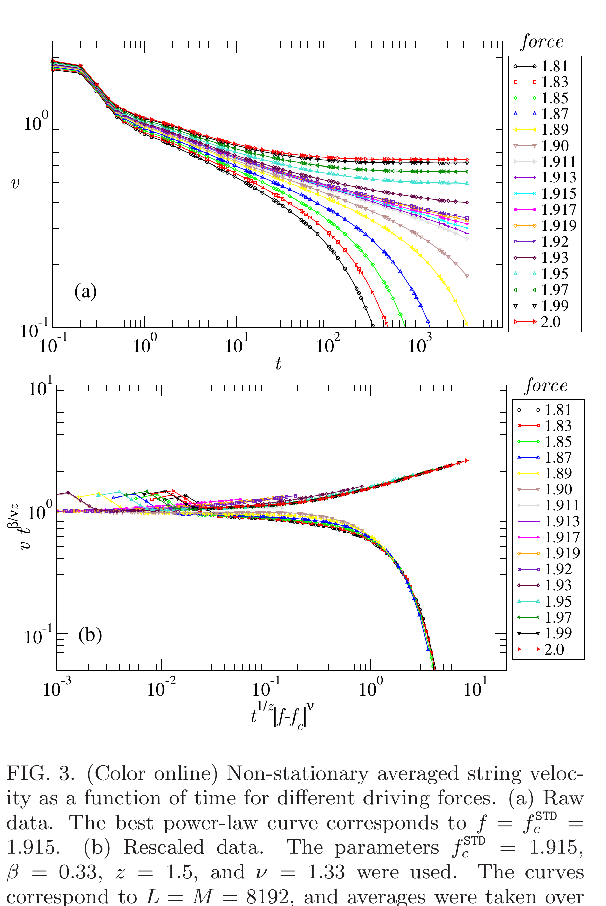
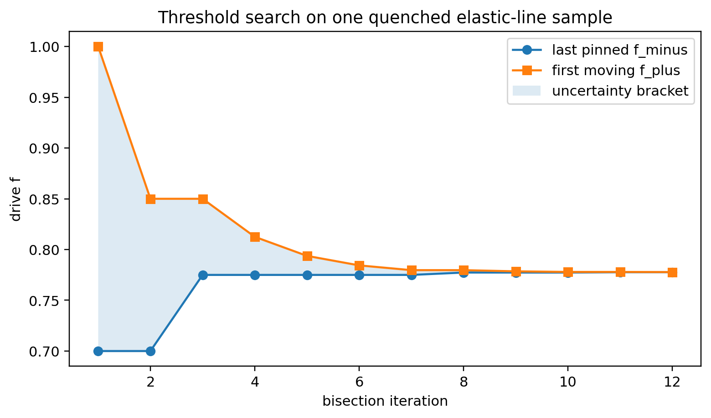
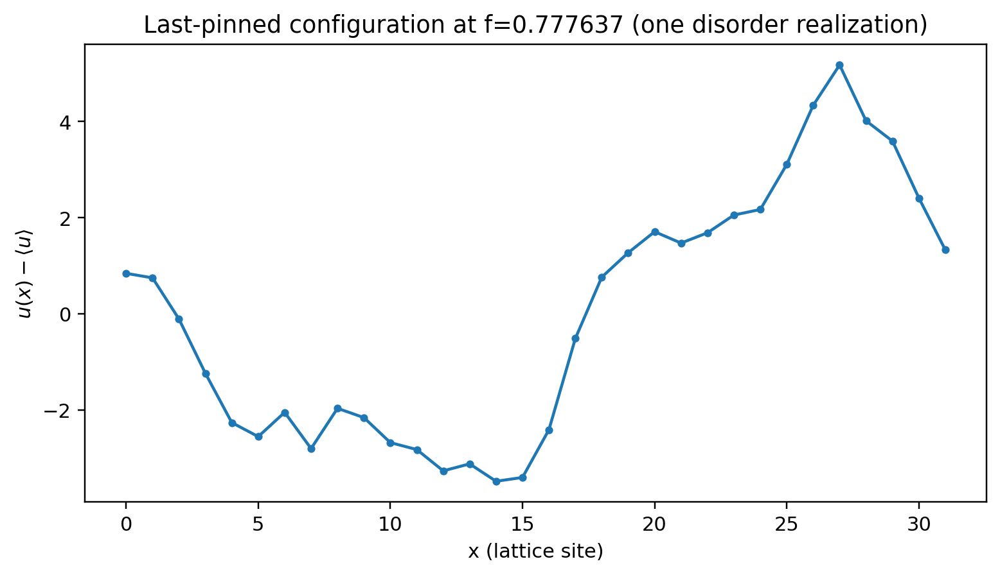
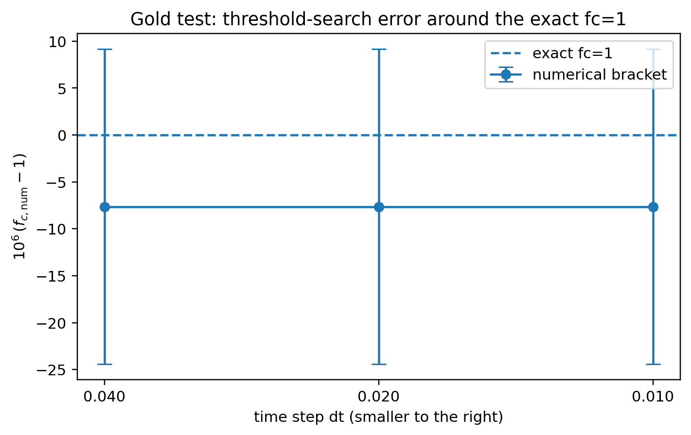
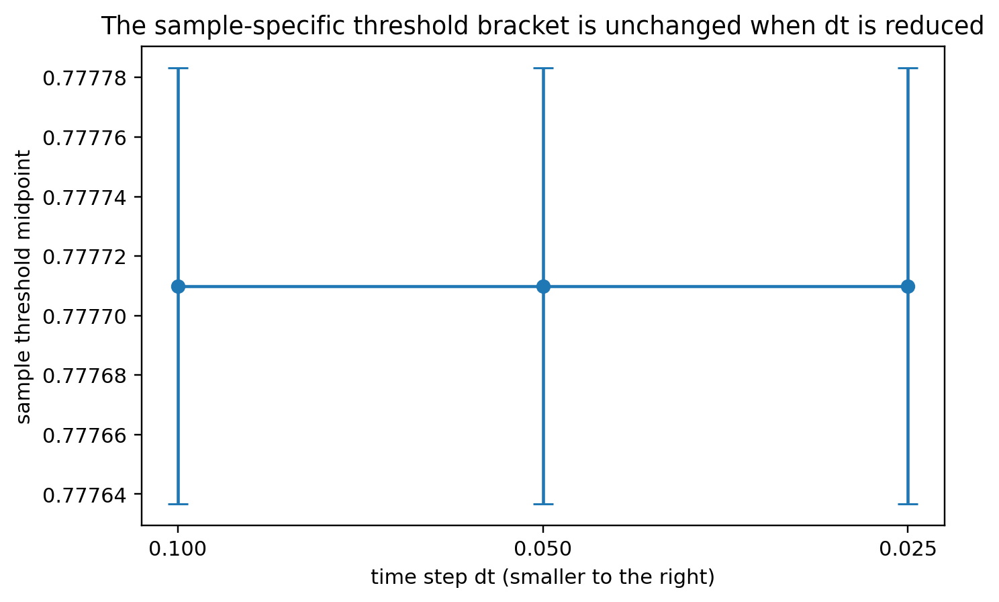

Learning Sliding Ferroelectricity / Reproduction Lab / Lesson 07
T=0threshold classifier真实 code plot
先判断 pinned 还是 moving，再二分 fc
L07 不再用“critical structure + finite-size threshold”两张无关图凑在一起。这里只回答一个问题：固定 disorder sample、固定 drive 后，长时间是停住还是持续运动？ 把这个二分类做稳，才能谈 sample-specific threshold bracket。
1 · 论文原图Fig.3 展示 threshold 两侧 v(t) 的不同命运。
2 · 我们的算法last pinned / first moving 两侧做二分。
3 · 数值稳定性dt 降低后 bracket 不移动。
4 · 权限边界这里只得到 finite-sample bracket。
0 · 论文原图：阈值两侧真正不同的是 long-time fate

注意：Ferrero 用的是 thermodynamic critical force 附近的 disorder-averaged non-steady relaxation；我们用 direct relaxation 去分类一个有限 periodic disorder sample。两者不是同一个算法，但“pinned ↔ moving”的物理分界是同一件事。
1 · 我们如何把它变成 bracket？


| sample | final bracket | width |
|---|---|---|
| L=32, seed=20260902 | [0.777636719, 0.777783203] | 1.465×10−4 |
2 · 先在答案已知的问题上验 classifier
du/dt = f − sin u → fc = 1

3 · 再看 dt：不是积分步长制造出来的 threshold

4 · 本课结论
THRESHOLD GOLD TEST + SMALL-LINE BRACKET PASS。 threshold classifier 和 bisection contract 可以交给 L08 使用。
没有证明：这不是 Ferrero exact metastable-state algorithm；没有 thermodynamic fc；0.7777 也不能和论文约 1.916 或材料电场阈值比较绝对数值。